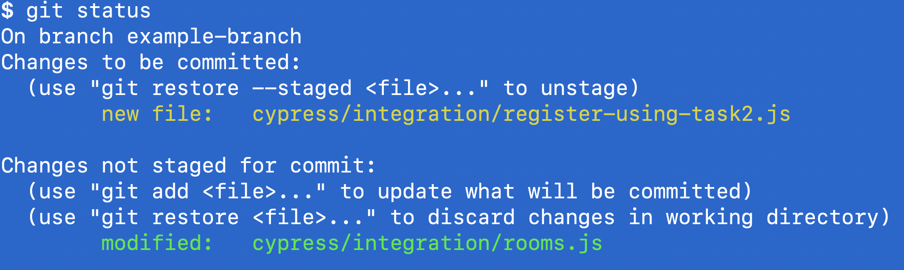
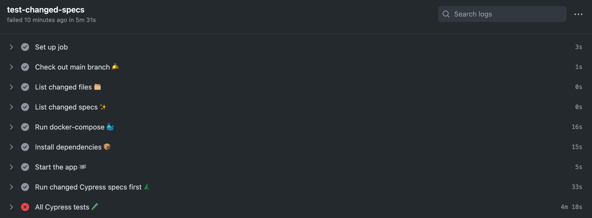
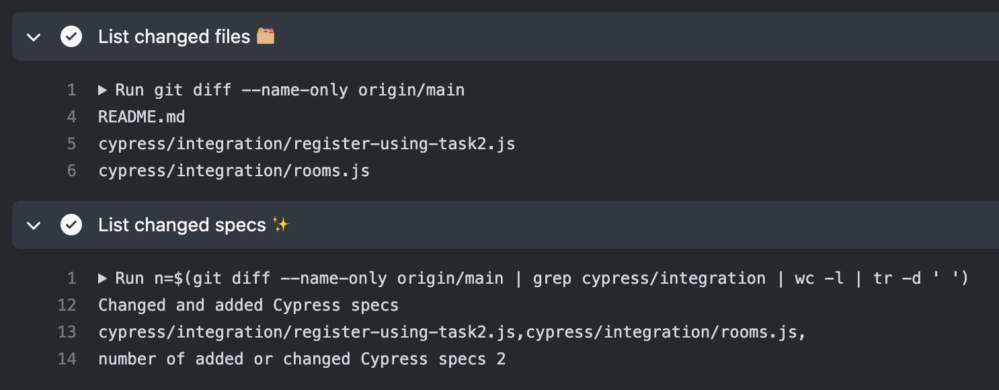
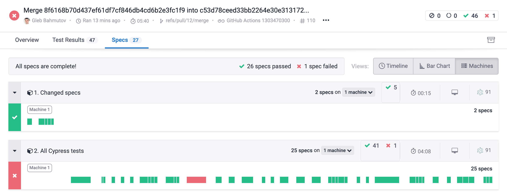
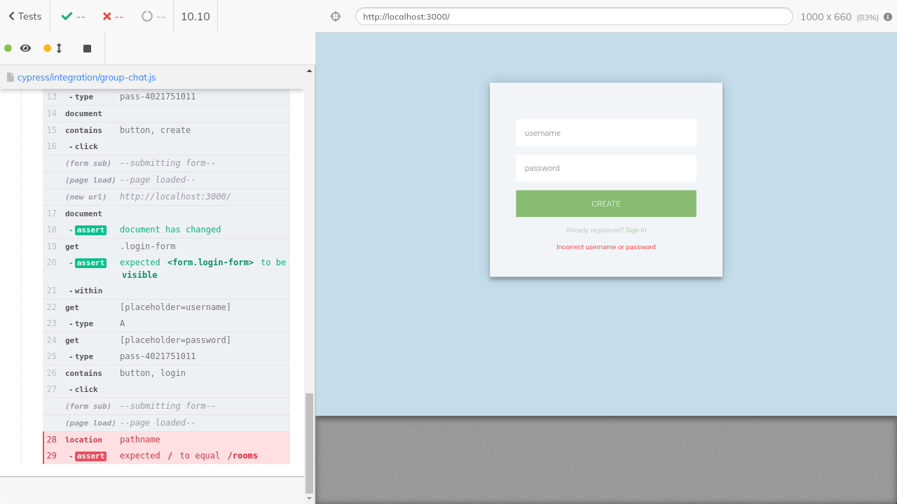
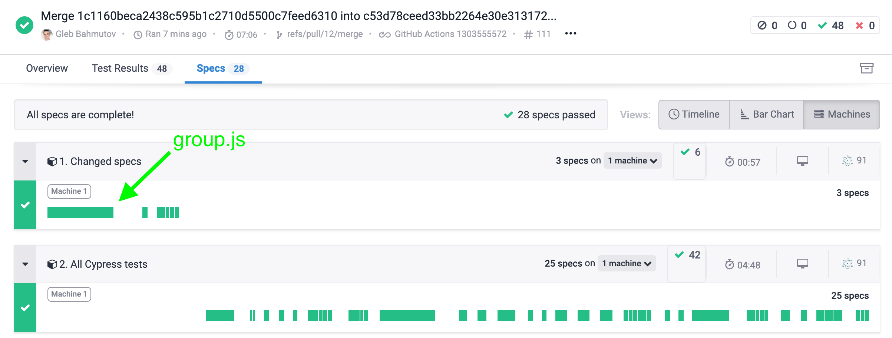

<!DOCTYPE html>
<html>
<head>
  <meta charset="utf-8">
  
  <title>Get Faster Feedback From Your Cypress Tests Running On GitHub Actions | Better world by better software</title>
  <meta name="viewport" content="width=device-width, initial-scale=1">
  <meta name="description" content="As your project grows, the end-to-end tests take longer and longer to finish. You open a pull request and ... wait for 10-20 minutes for the tests to finish. Then you search the Cypress Dashboard to f">
<meta property="og:type" content="article">
<meta property="og:title" content="Get Faster Feedback From Your Cypress Tests Running On GitHub Actions">
<meta property="og:url" content="https://glebbahmutov.com/blog/faster-ci-feedback/index.html">
<meta property="og:site_name" content="Better world by better software">
<meta property="og:description" content="As your project grows, the end-to-end tests take longer and longer to finish. You open a pull request and ... wait for 10-20 minutes for the tests to finish. Then you search the Cypress Dashboard to f">
<meta property="og:locale">
<meta property="og:image" content="https://glebbahmutov.com/blog/images/faster-ci-feedback/status.png">
<meta property="og:image" content="https://glebbahmutov.com/blog/images/faster-ci-feedback/workflow.png">
<meta property="og:image" content="https://glebbahmutov.com/blog/images/faster-ci-feedback/changed.png">
<meta property="og:image" content="https://glebbahmutov.com/blog/images/faster-ci-feedback/run.png">
<meta property="og:image" content="https://glebbahmutov.com/blog/images/faster-ci-feedback/group-chat.png">
<meta property="og:image" content="https://glebbahmutov.com/blog/images/faster-ci-feedback/fixed.png">
<meta property="article:published_time" content="2021-10-04T04:00:00.000Z">
<meta property="article:modified_time" content="2021-10-19T10:42:30.706Z">
<meta property="article:author" content="Gleb Bahmutov">
<meta property="article:tag" content="cypress">
<meta property="article:tag" content="github">
<meta property="article:tag" content="ci">
<meta name="twitter:card" content="summary">
<meta name="twitter:image" content="https://glebbahmutov.com/blog/images/faster-ci-feedback/status.png">
<meta name="twitter:creator" content="@bahmutov">
  
    <link rel="alternative" href="/blog/atom.xml" title="Better world by better software" type="application/atom+xml">
  
  
    <link rel="icon" href="/favicon.png">
  
  <link rel="preload" href="//fonts.googleapis.com/css?family=Source+Code+Pro" rel="stylesheet" as="style">
  
<link rel="stylesheet" href="../css/style.css">

  
<!-- Google Analytics -->
<script type="text/javascript">
(function(i,s,o,g,r,a,m){i['GoogleAnalyticsObject']=r;i[r]=i[r]||function(){
(i[r].q=i[r].q||[]).push(arguments)},i[r].l=1*new Date();a=s.createElement(o),
m=s.getElementsByTagName(o)[0];a.async=1;a.src=g;m.parentNode.insertBefore(a,m)
})(window,document,'script','//www.google-analytics.com/analytics.js','ga');

ga('create', 'UA-59999353-1', 'auto');
ga('send', 'pageview');

</script>
<!-- End Google Analytics -->


<meta name="generator" content="Hexo 5.4.0"></head>

<body>
  <div id="container">
    <div id="wrap">
      <header id="header">
  <div id="banner"></div>
  <div id="header-outer" class="outer">
    <div id="header-titles">
      <div id="header-title" class="inner">
        <h1 id="logo-wrap">
          <a href="../index.html" id="logo">Better world by better software</a>
        </h1>
        <!--
        
        -->
        <!-- <span class="no-mobile">Software advice from</span> -->
        <h2 id="subtitle-wrap">
          <span class="subtitle">
            <a id="subtitle" href="https://glebbahmutov.com">Gleb Bahmutov PhD</a>
            <a id="nav-house-link" class="nav-icon" href="/" title="Home"></a>
            
              <a id="nav-rss-link" class="nav-icon" href="/blog/atom.xml" title="RSS Feed"></a>
            
            <a id="nav-search-btn" class="nav-icon" title="Search"></a>
            <div id="search-form-wrap">
              <form action="//google.com/search" method="get" accept-charset="UTF-8" class="search-form"><input type="search" name="q" class="search-form-input" placeholder="Search"><button type="submit" class="search-form-submit">&#xF002;</button><input type="hidden" name="sitesearch" value="https://glebbahmutov.com/blog"></form>
            </div>
          </span>
        </h2>

      </div>
    </div>
    <div id="climate-crisis">
      <h2>Our planet 🌏 is in danger</h2>
      <h3>Act today: <a href="/blog/climate-emergency/">what you can do</a></h3>
    </div>
  </div>
</header>

      <div class="outer">
        <section id="main"><article id="post-faster-ci-feedback" class="article article-type-post" itemscope itemprop="blogPost">
  <div class="article-meta">
    <a href="" class="article-date">
  <time datetime="2021-10-04T04:00:00.000Z" itemprop="datePublished">Oct 4 2021</time>
</a>
    
  <div class="article-category">
    <a class="article-category-link" href="../categories/products/">products</a>
  </div>

  </div>
  <div class="article-inner">
    
    
      <header class="article-header">
        
  
    <h1 class="article-title" itemprop="name">
      Get Faster Feedback From Your Cypress Tests Running On GitHub Actions
    </h1>

    <h2 class="article-title" itemprop="name">
      How to run the modified Cypress.io specs first when using GitHub Actions
    </h2>

  


      </header>
    
    <div class="article-entry" itemprop="articleBody">
      
        <p>As your project grows, the end-to-end tests take longer and longer to finish. You open a pull request and ... wait for 10-20 minutes for the tests to finish. Then you search the Cypress Dashboard to find the spec with the modified test, just to see if it has failed or passed. All this time, you are thinking to yourself - why can&#39;t Cypress run the <em>modified</em> specs first? While there is no built-in way in Cypress as of October 2021, it is not hard to implement it yourself. In this blog post, I will show how to run new and changed Cypress.io specs first if you are using GitHub Actions. Similar approach could be used with any CI provider, like <a href="/blog/faster-ci-feedback-on-circleci/" title="CircleCI">CircleCI</a>.</p>
<blockquote class="pullquote"><p>🎁 You can find the source code for this blog post in the repo <a target="_blank" rel="noopener" href="https://github.com/bahmutov/chat.io">bahmutov/chat.io</a></p>
</blockquote>
<h2><span id="the-initial-workflow">The initial workflow</span></h2><p>At first, our GitHub workflow file checks out the source code and runs tests using <a target="_blank" rel="noopener" href="https://github.com/cypress-io/github-action">Cypress GH Action</a> I have written:</p>
<figure class="highlight yml"><figcaption><span>.github/workflows/ci.yml</span></figcaption><table><tr><td class="gutter"><pre><span class="line">1</span><br><span class="line">2</span><br><span class="line">3</span><br><span class="line">4</span><br><span class="line">5</span><br><span class="line">6</span><br><span class="line">7</span><br><span class="line">8</span><br><span class="line">9</span><br><span class="line">10</span><br><span class="line">11</span><br><span class="line">12</span><br><span class="line">13</span><br><span class="line">14</span><br><span class="line">15</span><br><span class="line">16</span><br><span class="line">17</span><br><span class="line">18</span><br><span class="line">19</span><br><span class="line">20</span><br><span class="line">21</span><br><span class="line">22</span><br><span class="line">23</span><br><span class="line">24</span><br><span class="line">25</span><br><span class="line">26</span><br><span class="line">27</span><br></pre></td><td class="code"><pre><span class="line"></span><br><span class="line"><span class="attr">name:</span> <span class="string">ci</span></span><br><span class="line"><span class="attr">on:</span> [<span class="string">push</span>, <span class="string">pull_request</span>]</span><br><span class="line"><span class="attr">jobs:</span></span><br><span class="line">  <span class="attr">test:</span></span><br><span class="line">    <span class="attr">runs-on:</span> <span class="string">ubuntu-20.04</span></span><br><span class="line">    <span class="attr">steps:</span></span><br><span class="line">      <span class="bullet">-</span> <span class="attr">name:</span> <span class="string">Check</span> <span class="string">out</span> <span class="string">code</span> <span class="string">🛎</span></span><br><span class="line">        <span class="attr">uses:</span> <span class="string">actions/checkout@v2</span></span><br><span class="line"></span><br><span class="line">      <span class="comment"># run utility services in the background</span></span><br><span class="line">      <span class="comment"># using docker-compose (see docker-compose.yml file)</span></span><br><span class="line">      <span class="bullet">-</span> <span class="attr">name:</span> <span class="string">Run</span> <span class="string">docker-compose</span></span><br><span class="line">        <span class="attr">run:</span> <span class="string">docker-compose</span> <span class="string">up</span> <span class="string">-d</span></span><br><span class="line"></span><br><span class="line">      <span class="comment"># install and cache dependencies, start the server</span></span><br><span class="line">      <span class="comment"># and run all Cypress.io tests</span></span><br><span class="line">      <span class="comment"># https://github.com/cypress-io/github-action</span></span><br><span class="line">      <span class="bullet">-</span> <span class="attr">name:</span> <span class="string">Cypress</span> <span class="string">tests</span> <span class="string">🧪</span></span><br><span class="line">        <span class="attr">uses:</span> <span class="string">cypress-io/github-action@v2</span></span><br><span class="line">        <span class="attr">with:</span></span><br><span class="line">          <span class="attr">start:</span> <span class="string">npm</span> <span class="string">start</span></span><br><span class="line">          <span class="attr">wait-on:</span> <span class="string">&#x27;http://localhost:3000&#x27;</span></span><br><span class="line">          <span class="attr">record:</span> <span class="literal">true</span></span><br><span class="line">        <span class="attr">env:</span></span><br><span class="line">          <span class="comment"># for recording test results and videos to Cypress Dashboard</span></span><br><span class="line">          <span class="attr">CYPRESS_RECORD_KEY:</span> <span class="string">$&#123;&#123;secrets.CYPRESS_RECORD_KEY&#125;&#125;</span></span><br></pre></td></tr></table></figure>
<p>The above workflow runs on every commit and on every pull request. We still want to run all the tests for every commit pushed to the <code>main</code> branch. But for the pull requests, we want to run the modified specs first before running all tests. Thus I modify the above <code>ci</code> workflow to only run on commits pushed to the main branch.</p>
<figure class="highlight yml"><table><tr><td class="gutter"><pre><span class="line">1</span><br><span class="line">2</span><br><span class="line">3</span><br><span class="line">4</span><br><span class="line">5</span><br><span class="line">6</span><br><span class="line">7</span><br><span class="line">8</span><br></pre></td><td class="code"><pre><span class="line"><span class="attr">name:</span> <span class="string">ci</span></span><br><span class="line"><span class="comment"># run all tests on the main branch</span></span><br><span class="line"><span class="attr">on:</span></span><br><span class="line">  <span class="attr">push:</span></span><br><span class="line">    <span class="attr">branches:</span></span><br><span class="line">      <span class="bullet">-</span> <span class="string">main</span></span><br><span class="line"><span class="string">...</span></span><br><span class="line"><span class="comment"># rest of the workflow</span></span><br></pre></td></tr></table></figure>
<p>You can find this workflow in <a target="_blank" rel="noopener" href="https://github.com/bahmutov/chat.io/blob/main/.github/workflows/ci.yml">.github/workflows/ci.yml</a>. This workflow is tied to the README badge, showing the current test status of the project:</p>
<figure class="highlight yml"><table><tr><td class="gutter"><pre><span class="line">1</span><br><span class="line">2</span><br><span class="line">3</span><br><span class="line">4</span><br></pre></td><td class="code"><pre><span class="line">[<span class="type">![ci</span> <span class="string">status</span>][<span class="string">ci</span> <span class="string">image</span>]<span class="string">][ci</span> <span class="string">url]</span></span><br><span class="line"></span><br><span class="line">[<span class="string">ci</span> <span class="string">image</span>]<span class="string">:</span> <span class="string">https://github.com/bahmutov/chat.io/workflows/ci/badge.svg?branch=main</span></span><br><span class="line">[<span class="string">ci</span> <span class="string">url</span>]<span class="string">:</span> <span class="string">https://github.com/bahmutov/chat.io/actions</span></span><br></pre></td></tr></table></figure>
<h2><span id="the-pull-request-workflow">The pull request workflow</span></h2><p>I will use a separate workflow file for CI steps to run for the pull requests. You can find the finished workflow file at <a target="_blank" rel="noopener" href="https://github.com/bahmutov/chat.io/blob/main/.github/workflows/pr.yml">.github/workflows/pr.yml</a>. Let&#39;s start by cloning the <code>ci.yml</code> and just modifying the <code>on</code> trigger.</p>
<figure class="highlight yml"><figcaption><span>.github/workflows/pr.yml</span></figcaption><table><tr><td class="gutter"><pre><span class="line">1</span><br><span class="line">2</span><br><span class="line">3</span><br><span class="line">4</span><br><span class="line">5</span><br></pre></td><td class="code"><pre><span class="line"><span class="attr">name:</span> <span class="string">pr</span></span><br><span class="line"><span class="comment"># on pull request, determine changed or added Cypress specs</span></span><br><span class="line"><span class="comment"># if there are any (but not too many), run them first</span></span><br><span class="line"><span class="comment"># then run all Cypress specs</span></span><br><span class="line"><span class="attr">on:</span> [<span class="string">pull_request</span>]</span><br></pre></td></tr></table></figure>
<p>First, we will need to check out the source code. Because we want to determine the files changed between the PR branch and the default <code>main</code> branch, we need to fetch this information. Thus I will use the parameter <code>fetch-depth: 0</code> with <a target="_blank" rel="noopener" href="https://github.com/actions/checkout">actions/checkout</a> action:</p>
<figure class="highlight yml"><table><tr><td class="gutter"><pre><span class="line">1</span><br><span class="line">2</span><br><span class="line">3</span><br><span class="line">4</span><br><span class="line">5</span><br><span class="line">6</span><br><span class="line">7</span><br></pre></td><td class="code"><pre><span class="line"><span class="comment"># https://github.com/actions/checkout</span></span><br><span class="line"><span class="bullet">-</span> <span class="attr">name:</span> <span class="string">Check</span> <span class="string">out</span> <span class="string">main</span> <span class="string">branch</span> <span class="string">🛎</span></span><br><span class="line">  <span class="attr">uses:</span> <span class="string">actions/checkout@v2</span></span><br><span class="line">  <span class="attr">with:</span></span><br><span class="line">    <span class="comment"># need to fetch info about all branches</span></span><br><span class="line">    <span class="comment"># to determine the changed spec files</span></span><br><span class="line">    <span class="attr">fetch-depth:</span> <span class="number">0</span></span><br></pre></td></tr></table></figure>
<p>Here is how we can find all changed (added and modified) files between the current branch and the <code>main</code> branch</p>
<figure class="highlight yml"><table><tr><td class="gutter"><pre><span class="line">1</span><br><span class="line">2</span><br><span class="line">3</span><br></pre></td><td class="code"><pre><span class="line"><span class="bullet">-</span> <span class="attr">name:</span> <span class="string">List</span> <span class="string">changed</span> <span class="string">files</span> <span class="string">🗂</span></span><br><span class="line">  <span class="comment"># should we get the branch names from the PR?</span></span><br><span class="line">  <span class="attr">run:</span> <span class="string">git</span> <span class="string">diff</span> <span class="string">--name-only</span> <span class="string">origin/main</span></span><br></pre></td></tr></table></figure>
<p>For example, I have started a new branch <code>example-branch</code> and modified the spec <code>rooms.js</code> and added a new spec <code></code></p>
<p></p>
<p>Let&#39;s commit and push this branch to the remote origin.</p>
<figure class="highlight shell"><table><tr><td class="gutter"><pre><span class="line">1</span><br><span class="line">2</span><br><span class="line">3</span><br></pre></td><td class="code"><pre><span class="line"><span class="meta">$</span><span class="bash"> git add .</span></span><br><span class="line"><span class="meta">$</span><span class="bash"> git commit -m <span class="string">&quot;new spec and small tweaks&quot;</span></span></span><br><span class="line"><span class="meta">$</span><span class="bash"> git push -u</span></span><br></pre></td></tr></table></figure>
<p>Even when working locally, we can see the changed files between the current branch <code>example-branch</code> and the <code>main</code> one.</p>
<figure class="highlight text"><table><tr><td class="gutter"><pre><span class="line">1</span><br><span class="line">2</span><br><span class="line">3</span><br></pre></td><td class="code"><pre><span class="line">$ git diff --name-only origin/main</span><br><span class="line">cypress/integration/register-using-task2.js</span><br><span class="line">cypress/integration/rooms.js</span><br></pre></td></tr></table></figure>
<p>The pull request might have other modified files besides the Cypress specs. For example, I will touch the README file too. Here is how we can filter the specs</p>
<figure class="highlight shell"><table><tr><td class="gutter"><pre><span class="line">1</span><br><span class="line">2</span><br><span class="line">3</span><br><span class="line">4</span><br><span class="line">5</span><br><span class="line">6</span><br><span class="line">7</span><br><span class="line">8</span><br></pre></td><td class="code"><pre><span class="line"><span class="meta">$</span><span class="bash"> git diff --name-only origin/main</span></span><br><span class="line">README.md</span><br><span class="line">cypress/integration/register-using-task2.js</span><br><span class="line">cypress/integration/rooms.js</span><br><span class="line"></span><br><span class="line"><span class="meta">$</span><span class="bash"> git diff --name-only origin/main | grep cypress/integration</span></span><br><span class="line">cypress/integration/register-using-task2.js</span><br><span class="line">cypress/integration/rooms.js</span><br></pre></td></tr></table></figure>
<p>Super. Later we will need to know the number of modified specs - we can use <code>wc -l</code> to count the lines with the modified Cypress specs</p>
<figure class="highlight shell"><table><tr><td class="gutter"><pre><span class="line">1</span><br><span class="line">2</span><br></pre></td><td class="code"><pre><span class="line"><span class="meta">$</span><span class="bash"> git diff --name-only origin/main | grep cypress/integration | wc -l</span></span><br><span class="line">       2</span><br></pre></td></tr></table></figure>
<p>Ughh, why is there whitespace around <code>2</code>, let&#39;s trim it</p>
<figure class="highlight shell"><table><tr><td class="gutter"><pre><span class="line">1</span><br><span class="line">2</span><br></pre></td><td class="code"><pre><span class="line"><span class="meta">$</span><span class="bash"> git diff --name-only origin/main | grep cypress/integration | wc -l | tr -d <span class="string">&#x27; &#x27;</span></span></span><br><span class="line">2</span><br></pre></td></tr></table></figure>
<p>Now that we know the number of changed specs, let&#39;s also join them into a single string to be passed to the <code>cypress run --spec ...</code> parameter.</p>
<figure class="highlight shell"><table><tr><td class="gutter"><pre><span class="line">1</span><br><span class="line">2</span><br></pre></td><td class="code"><pre><span class="line"><span class="meta">$</span><span class="bash"> git diff --name-only origin/main | grep cypress/integration | tr <span class="string">&#x27;\n&#x27;</span> <span class="string">&#x27;,&#x27;</span></span></span><br><span class="line">cypress/integration/register-using-task2.js,cypress/integration/rooms.js,</span><br></pre></td></tr></table></figure>
<p>Super. We can compute the number and the spec parameter in the workflow, and even hide the details from other specs by using the <code>output</code> parameters.</p>
<figure class="highlight yml"><table><tr><td class="gutter"><pre><span class="line">1</span><br><span class="line">2</span><br><span class="line">3</span><br><span class="line">4</span><br><span class="line">5</span><br><span class="line">6</span><br><span class="line">7</span><br><span class="line">8</span><br><span class="line">9</span><br><span class="line">10</span><br><span class="line">11</span><br><span class="line">12</span><br><span class="line">13</span><br><span class="line">14</span><br><span class="line">15</span><br><span class="line">16</span><br></pre></td><td class="code"><pre><span class="line"><span class="bullet">-</span> <span class="attr">name:</span> <span class="string">List</span> <span class="string">changed</span> <span class="string">files</span> <span class="string">🗂</span></span><br><span class="line">  <span class="comment"># should we get the branch names from the PR?</span></span><br><span class="line">  <span class="attr">run:</span> <span class="string">git</span> <span class="string">diff</span> <span class="string">--name-only</span> <span class="string">origin/main</span></span><br><span class="line"></span><br><span class="line"><span class="bullet">-</span> <span class="attr">name:</span> <span class="string">List</span> <span class="string">changed</span> <span class="string">specs</span> <span class="string">✨</span></span><br><span class="line">  <span class="attr">id:</span> <span class="string">list-changed-specs</span></span><br><span class="line">  <span class="attr">run:</span> <span class="string">|</span></span><br><span class="line">    <span class="string">n=$(git</span> <span class="string">diff</span> <span class="string">--name-only</span> <span class="string">origin/main</span> <span class="string">|</span> <span class="string">grep</span> <span class="string">cypress/integration</span> <span class="string">|</span> <span class="string">wc</span> <span class="string">-l</span> <span class="string">|</span> <span class="string">tr</span> <span class="string">-d</span> <span class="string">&#x27; &#x27;</span><span class="string">)</span></span><br><span class="line">    <span class="string">specs=$(git</span> <span class="string">diff</span> <span class="string">--name-only</span> <span class="string">origin/main</span> <span class="string">|</span> <span class="string">grep</span> <span class="string">cypress/integration</span> <span class="string">|</span> <span class="string">tr</span> <span class="string">&#x27;\n&#x27;</span> <span class="string">&#x27;,&#x27;</span><span class="string">)</span></span><br><span class="line">    <span class="string">echo</span> <span class="string">&quot;Changed and added Cypress specs&quot;</span></span><br><span class="line">    <span class="string">echo</span> <span class="string">$&#123;specs&#125;</span></span><br><span class="line">    <span class="string">echo</span> <span class="string">&quot;number of added or changed Cypress specs $&#123;n&#125;&quot;</span></span><br><span class="line"></span><br><span class="line">    <span class="comment"># output the number of specs and the specs list</span></span><br><span class="line">    <span class="string">echo</span> <span class="string">&quot;::set-output name=specsN::$&#123;n&#125;&quot;</span></span><br><span class="line">    <span class="string">echo</span> <span class="string">&quot;::set-output name=specs::$&#123;specs&#125;&quot;</span></span><br></pre></td></tr></table></figure>
<p>Other workflow steps can access the number of changed specs using <code>$&#123;&#123; steps.list-changed-specs.outputs.specsN &#125;&#125;</code> expression syntax. Let&#39;s set up two test jobs - the first one will run if there are changed specs, but not more than 5. If there are lots of modified specs, it makes sense to simply run all of them.</p>
<figure class="highlight yml"><table><tr><td class="gutter"><pre><span class="line">1</span><br><span class="line">2</span><br><span class="line">3</span><br><span class="line">4</span><br><span class="line">5</span><br><span class="line">6</span><br><span class="line">7</span><br><span class="line">8</span><br><span class="line">9</span><br><span class="line">10</span><br><span class="line">11</span><br><span class="line">12</span><br><span class="line">13</span><br><span class="line">14</span><br><span class="line">15</span><br><span class="line">16</span><br><span class="line">17</span><br><span class="line">18</span><br><span class="line">19</span><br><span class="line">20</span><br><span class="line">21</span><br><span class="line">22</span><br><span class="line">23</span><br><span class="line">24</span><br><span class="line">25</span><br><span class="line">26</span><br><span class="line">27</span><br><span class="line">28</span><br><span class="line">29</span><br></pre></td><td class="code"><pre><span class="line"><span class="comment"># https://github.com/cypress-io/github-action</span></span><br><span class="line"><span class="bullet">-</span> <span class="attr">name:</span> <span class="string">Run</span> <span class="string">changed</span> <span class="string">Cypress</span> <span class="string">specs</span> <span class="string">first</span> <span class="string">🌲</span></span><br><span class="line">  <span class="comment"># it makes sense to run changed specs only if there are a few</span></span><br><span class="line">  <span class="comment"># otherwise just run all specs in the next step</span></span><br><span class="line">  <span class="attr">if:</span> <span class="string">$&#123;&#123;</span> <span class="string">steps.list-changed-specs.outputs.specsN</span> <span class="string">&gt;</span> <span class="number">0</span> <span class="string">&amp;&amp;</span> <span class="string">steps.list-changed-specs.outputs.specsN</span> <span class="string">&lt;</span> <span class="number">5</span> <span class="string">&#125;&#125;</span></span><br><span class="line">  <span class="attr">uses:</span> <span class="string">cypress-io/github-action@v2</span></span><br><span class="line">  <span class="attr">with:</span></span><br><span class="line">    <span class="attr">start:</span> <span class="string">npm</span> <span class="string">start</span></span><br><span class="line">    <span class="attr">wait-on:</span> <span class="string">&#x27;http://localhost:3000&#x27;</span></span><br><span class="line">    <span class="attr">record:</span> <span class="literal">true</span></span><br><span class="line">    <span class="attr">group:</span> <span class="string">&#x27;1. Changed specs&#x27;</span></span><br><span class="line">    <span class="attr">spec:</span> <span class="string">$&#123;&#123;</span> <span class="string">steps.list-changed-specs.outputs.specs</span> <span class="string">&#125;&#125;</span></span><br><span class="line">  <span class="attr">env:</span></span><br><span class="line">    <span class="comment"># for recording test results and videos to Cypress Dashboard</span></span><br><span class="line">    <span class="attr">CYPRESS_RECORD_KEY:</span> <span class="string">$&#123;&#123;secrets.CYPRESS_RECORD_KEY&#125;&#125;</span></span><br><span class="line"></span><br><span class="line"><span class="comment"># if the changed / added Cypress tests passed</span></span><br><span class="line"><span class="comment"># run all Cypress tests to confirm the app is working</span></span><br><span class="line"><span class="bullet">-</span> <span class="attr">name:</span> <span class="string">All</span> <span class="string">Cypress</span> <span class="string">tests</span> <span class="string">🧪</span></span><br><span class="line">  <span class="attr">uses:</span> <span class="string">cypress-io/github-action@v2</span></span><br><span class="line">  <span class="attr">with:</span></span><br><span class="line">    <span class="comment"># hmm, is the application running?</span></span><br><span class="line">    <span class="attr">start:</span> <span class="string">npm</span> <span class="string">start</span></span><br><span class="line">    <span class="attr">wait-on:</span> <span class="string">&#x27;http://localhost:3000&#x27;</span></span><br><span class="line">    <span class="attr">record:</span> <span class="literal">true</span></span><br><span class="line">    <span class="attr">group:</span> <span class="string">&#x27;2. All Cypress tests&#x27;</span></span><br><span class="line">  <span class="attr">env:</span></span><br><span class="line">    <span class="comment"># for recording test results and videos to Cypress Dashboard</span></span><br><span class="line">    <span class="attr">CYPRESS_RECORD_KEY:</span> <span class="string">$&#123;&#123;secrets.CYPRESS_RECORD_KEY&#125;&#125;</span></span><br></pre></td></tr></table></figure>
<p>We have two problems in the above workflow:</p>
<ul>
<li>we install the NPM dependencies twice (potentially)</li>
<li>we are trying to run the application using <code>npm start</code> twice (potentially)</li>
</ul>
<p>Thus we can optimize the workflow by installing the dependencies just once, and starting the application before running any Cypress tests.</p>
<figure class="highlight yml"><table><tr><td class="gutter"><pre><span class="line">1</span><br><span class="line">2</span><br><span class="line">3</span><br><span class="line">4</span><br><span class="line">5</span><br><span class="line">6</span><br><span class="line">7</span><br><span class="line">8</span><br><span class="line">9</span><br><span class="line">10</span><br><span class="line">11</span><br><span class="line">12</span><br><span class="line">13</span><br><span class="line">14</span><br><span class="line">15</span><br><span class="line">16</span><br><span class="line">17</span><br><span class="line">18</span><br><span class="line">19</span><br><span class="line">20</span><br><span class="line">21</span><br><span class="line">22</span><br><span class="line">23</span><br><span class="line">24</span><br><span class="line">25</span><br><span class="line">26</span><br><span class="line">27</span><br><span class="line">28</span><br><span class="line">29</span><br><span class="line">30</span><br><span class="line">31</span><br><span class="line">32</span><br><span class="line">33</span><br><span class="line">34</span><br><span class="line">35</span><br><span class="line">36</span><br><span class="line">37</span><br><span class="line">38</span><br><span class="line">39</span><br></pre></td><td class="code"><pre><span class="line"><span class="comment"># install dependencies</span></span><br><span class="line"><span class="bullet">-</span> <span class="attr">name:</span> <span class="string">Install</span> <span class="string">dependencies</span> <span class="string">📦</span></span><br><span class="line">  <span class="attr">uses:</span> <span class="string">cypress-io/github-action@v2</span></span><br><span class="line">  <span class="attr">with:</span></span><br><span class="line">    <span class="comment"># just perform install</span></span><br><span class="line">    <span class="attr">runTests:</span> <span class="literal">false</span></span><br><span class="line"></span><br><span class="line"><span class="bullet">-</span> <span class="attr">name:</span> <span class="string">Start</span> <span class="string">the</span> <span class="string">app</span> <span class="string">🏁</span></span><br><span class="line">  <span class="attr">run:</span> <span class="string">npm</span> <span class="string">start</span> <span class="string">&amp;</span></span><br><span class="line"></span><br><span class="line"><span class="comment"># https://github.com/cypress-io/github-action</span></span><br><span class="line"><span class="bullet">-</span> <span class="attr">name:</span> <span class="string">Run</span> <span class="string">changed</span> <span class="string">Cypress</span> <span class="string">specs</span> <span class="string">first</span> <span class="string">🌲</span></span><br><span class="line">  <span class="comment"># it makes sense to run changed specs only if there are a few</span></span><br><span class="line">  <span class="comment"># otherwise just run all specs in the next step</span></span><br><span class="line">  <span class="attr">if:</span> <span class="string">$&#123;&#123;</span> <span class="string">steps.list-changed-specs.outputs.specsN</span> <span class="string">&gt;</span> <span class="number">0</span> <span class="string">&amp;&amp;</span> <span class="string">steps.list-changed-specs.outputs.specsN</span> <span class="string">&lt;</span> <span class="number">5</span> <span class="string">&#125;&#125;</span></span><br><span class="line">  <span class="attr">uses:</span> <span class="string">cypress-io/github-action@v2</span></span><br><span class="line">  <span class="attr">with:</span></span><br><span class="line">    <span class="comment"># we have already installed all dependencies above</span></span><br><span class="line">    <span class="attr">install:</span> <span class="literal">false</span></span><br><span class="line">    <span class="comment"># the server is running already, but just wait for it</span></span><br><span class="line">    <span class="attr">wait-on:</span> <span class="string">&#x27;http://localhost:3000&#x27;</span></span><br><span class="line">    <span class="attr">record:</span> <span class="literal">true</span></span><br><span class="line">    <span class="attr">group:</span> <span class="string">&#x27;1. Changed specs&#x27;</span></span><br><span class="line">    <span class="attr">spec:</span> <span class="string">$&#123;&#123;</span> <span class="string">steps.list-changed-specs.outputs.specs</span> <span class="string">&#125;&#125;</span></span><br><span class="line">  <span class="attr">env:</span></span><br><span class="line">    <span class="comment"># for recording test results and videos to Cypress Dashboard</span></span><br><span class="line">    <span class="attr">CYPRESS_RECORD_KEY:</span> <span class="string">$&#123;&#123;secrets.CYPRESS_RECORD_KEY&#125;&#125;</span></span><br><span class="line"></span><br><span class="line"><span class="bullet">-</span> <span class="attr">name:</span> <span class="string">All</span> <span class="string">Cypress</span> <span class="string">tests</span> <span class="string">🧪</span></span><br><span class="line">  <span class="attr">uses:</span> <span class="string">cypress-io/github-action@v2</span></span><br><span class="line">  <span class="attr">with:</span></span><br><span class="line">    <span class="comment"># we have already installed all dependencies above</span></span><br><span class="line">    <span class="attr">install:</span> <span class="literal">false</span></span><br><span class="line">    <span class="attr">wait-on:</span> <span class="string">&#x27;http://localhost:3000&#x27;</span></span><br><span class="line">    <span class="attr">record:</span> <span class="literal">true</span></span><br><span class="line">    <span class="attr">group:</span> <span class="string">&#x27;2. All Cypress tests&#x27;</span></span><br><span class="line">  <span class="attr">env:</span></span><br><span class="line">    <span class="comment"># for recording test results and videos to Cypress Dashboard</span></span><br><span class="line">    <span class="attr">CYPRESS_RECORD_KEY:</span> <span class="string">$&#123;&#123;secrets.CYPRESS_RECORD_KEY&#125;&#125;</span></span><br></pre></td></tr></table></figure>
<p>Tip: Cypress GH Action can do a lot, find all examples in the <a target="_blank" rel="noopener" href="https://github.com/cypress-io/github-action">cypress-io/github-action</a> repo.</p>
<h2><span id="limit-the-git-output">Limit the Git output</span></h2><p>Two words of caution: the command <code>git diff --name-only origin/main</code> outputs all file names, including the names of the deleted files. Thus I limit the list of the modified and added files only using</p>
<figure class="highlight plain"><table><tr><td class="gutter"><pre><span class="line">1</span><br></pre></td><td class="code"><pre><span class="line">git diff --name-only --diff-filter&#x3D;AM origin&#x2F;main</span><br></pre></td></tr></table></figure>
<p>You should also be careful about printing the list of changed files. By itself the above command will page the output and pause after N lines. This will halt the CI job usually:</p>
<figure class="highlight plain"><table><tr><td class="gutter"><pre><span class="line">1</span><br><span class="line">2</span><br><span class="line">3</span><br><span class="line">4</span><br><span class="line">5</span><br><span class="line">6</span><br><span class="line">7</span><br><span class="line">8</span><br><span class="line">9</span><br><span class="line">10</span><br></pre></td><td class="code"><pre><span class="line">$ git diff --name-only --diff-filter&#x3D;AM origin&#x2F;main</span><br><span class="line">.circleci&#x2F;config.yml</span><br><span class="line">README.md</span><br><span class="line">cypress&#x2F;integration&#x2F;spec-a.js</span><br><span class="line">cypress&#x2F;integration&#x2F;spec-b.js</span><br><span class="line">cypress&#x2F;integration&#x2F;spec-c.js</span><br><span class="line">...</span><br><span class="line">--More--</span><br><span class="line"></span><br><span class="line">Too long with no output (exceeded 10m0s): context deadline exceeded</span><br></pre></td></tr></table></figure>
<p>Thus you want to pipe the output through the filters first - the filters do not get paginated. For example, you can get the raw number of changed files.</p>
<figure class="highlight plain"><table><tr><td class="gutter"><pre><span class="line">1</span><br><span class="line">2</span><br><span class="line">3</span><br><span class="line">4</span><br><span class="line">5</span><br></pre></td><td class="code"><pre><span class="line">n&#x3D;$(git diff --name-only --diff-filter&#x3D;AM origin&#x2F;main | grep cypress&#x2F;integration | wc -l | tr -d &#39; &#39;)</span><br><span class="line">if [ $&#123;n&#125; -gt 20 ]; then</span><br><span class="line">  echo &quot;Too many files changes...&quot;</span><br><span class="line">  # stop the changed specs job</span><br><span class="line">fi</span><br></pre></td></tr></table></figure>
<h2><span id="in-action">In action</span></h2><p>Let&#39;s see how the above workflow performs. I have opened the pull request <a target="_blank" rel="noopener" href="https://github.com/bahmutov/chat.io/pull/12">#12</a>.</p>
<p>The GH workflow shows the steps, and that the modified specs task was executed</p>
<p></p>
<p>The <code>list-changed-spec</code> step has calculated the two changed Cypress test files correctly</p>
<p></p>
<p>The changed tests have finished successfully, while all tests have failed in an unrelated spec <code>group-chat.js</code>. Notice how fast the modified specs have finished vs waiting for all the tests: 30 seconds vs 5 minutes.</p>
<p></p>
<p>The <code>group-chat.js</code> shows the test fails to log in the first user <code>A</code></p>
<p></p>
<p>Let&#39;s modify the <code>group-chat.js</code> - something goes wrong there, let&#39;s change the user name to be a <code>userA</code> instead of just <code>A</code>. Once I push the commit with the username change, the 3 changes specs run:</p>
<p></p>
<p>Our fix has solved the problem, and all the Cypress specs have passed. We are good to merge.</p>
<h2><span id="see-also">See also</span></h2><ul>
<li><a href="/blog/faster-ci-feedback-on-circleci/" title="Get Faster Feedback From Your Cypress Tests Running On CircleCI">Get Faster Feedback From Your Cypress Tests Running On CircleCI</a></li>
<li><a href="/blog/trying-github-actions/" title="Trying GitHub Actions">Trying GitHub Actions</a></li>
<li><a href="/blog/parallel-cypress-tests-gh-action/" title="Split Long GitHub Action Workflow Into Parallel Cypress Jobs">Split Long GitHub Action Workflow Into Parallel Cypress Jobs</a>
</li>
</ul>

      
    </div>

    
      <footer class="article-footer personal-links">
  <p>
    Follow Gleb Bahmutov <a target="_blank" rel="noopener" href="https://twitter.com/bahmutov">@bahmutov</a>,
    see his projects at <a href="https://glebbahmutov.com">glebbahmutov.com</a>,
    watch his Cypress <a target="_blank" rel="noopener" href="https://www.youtube.com/c/glebbahmutov/videos">videos</a>,
    browse his <a target="_blank" rel="noopener" href="https://slides.com/bahmutov">presentations</a>
  </p>
  <p>
    Want to know more about Cypress? Check out <a href="https://cypress.tips" target="_blank">cypress.tips</a>
  </p>
</footer>
<script src="https://rawgit.com/toddmotto/linkjuice/702066a37124081e7ad1a972844a9a91115be05a/dist/linkjuice.js"></script>
<script>
function contentFn (node, icon) {
  const s = '<a href="#' + node.id + '" class="linkjuice">' +
    node.innerHTML + ' ' + icon + '</a>\n'
  return s
}
linkjuice.init('.article-entry', {
  selectors: ['h2 span'],
  icon: '<span class="link-symbol">#</span>',
  contentFn: contentFn
});
</script>

    

    <footer class="article-footer">
      <a data-url="https://glebbahmutov.com/blog/faster-ci-feedback/" data-id="ckwbibm9y00fwu4vgfx26dgf2" class="article-share-link">Share</a>
      
        <a href="https://glebbahmutov.com/blog/faster-ci-feedback/#disqus_thread" class="article-comment-link">Comments</a>
      
      
  <ul class="article-tag-list" itemprop="keywords"><li class="article-tag-list-item"><a class="article-tag-list-link" href="../tags/ci/" rel="tag">ci</a></li><li class="article-tag-list-item"><a class="article-tag-list-link" href="../tags/cypress/" rel="tag">cypress</a></li><li class="article-tag-list-item"><a class="article-tag-list-link" href="../tags/github/" rel="tag">github</a></li></ul>

    </footer>
  </div>
  
    
<nav id="article-nav">
  
    <a href="../faster-ci-feedback-on-circleci/" id="article-nav-newer" class="article-nav-link-wrap">
      <strong class="article-nav-caption">Newer</strong>
      <div class="article-nav-title">
        
          Get Faster Feedback From Your Cypress Tests Running On CircleCI
        
      </div>
    </a>
  
  
    <a href="../request-graphql/" id="article-nav-older" class="article-nav-link-wrap">
      <strong class="article-nav-caption">Older</strong>
      <div class="article-nav-title">Make GraphQL Calls From Cypress Tests</div>
    </a>
  
</nav>

  
</article>


<section id="comments">
  <div id="disqus_thread">
    <noscript>Please enable JavaScript to view the <a target="_blank" rel="noopener" href="//disqus.com/?ref_noscript">comments powered by Disqus.</a></noscript>
  </div>
</section>

</section>
        
          <aside id="sidebar">
  
    <style>
#carbonads {
  display: block;
  overflow: hidden;
  font-size: 11px;
  font-family: Verdana, "Helvetica Neue", Helvetica, sans-serif;
  line-height: 1.5;
}

#carbonads a {
  color: #258fb8;
  text-decoration: none;
}

#carbonads a:hover {
  text-decoration: underline;
}

#carbonads span {
  position: relative;
  display: block;
  overflow: hidden;
}

.carbon-img {
  float: left;
  margin-right: 1em;
}

.carbon-img img { display: block; }

.carbon-text {
  display: block;
  float: left;
  text-align: left;
  margin-top: 0.5em;
}
@media screen and (min-width: 1024px) {
  .carbon-text {
    max-width: calc(100% - 130px - 1em);
  }
}

.carbon-poweredby {
  /*position: absolute;
  right: 0;
  bottom: 0;*/
  float: right;
  display: block;
  font-size: 11px;
}
</style>
<div class="widget-wrap">
  <div class="widget-title">&nbsp;</div>
  <div class="widget">
    <!-- Carbon Ads -->
    <script async type="text/javascript"
      src="//cdn.carbonads.com/carbon.js?zoneid=1673&serve=C6AILKT&placement=glebbahmutovcom"
      id="_carbonads_js"></script>
  </div>
</div>

  
    
  <div class="widget-wrap">
    <h3 class="widget-title">Categories</h3>
    <div class="widget">
      <ul class="category-list"><li class="category-list-item"><a class="category-list-link" href="../categories/book-review/">book review</a><span class="category-list-count">15</span></li><li class="category-list-item"><a class="category-list-link" href="../categories/climate/">climate</a><span class="category-list-count">9</span></li><li class="category-list-item"><a class="category-list-link" href="../categories/people/">people</a><span class="category-list-count">21</span></li><li class="category-list-item"><a class="category-list-link" href="../categories/process/">process</a><span class="category-list-count">138</span></li><li class="category-list-item"><a class="category-list-link" href="../categories/products/">products</a><span class="category-list-count">433</span></li></ul>
    </div>
  </div>

  
    
  <div class="widget-wrap">
    <h3 class="widget-title">Tags</h3>
    <div class="widget">
      <ul class="tag-list" itemprop="keywords"><li class="tag-list-item"><a class="tag-list-link" href="../tags/11ty/" rel="tag">11ty</a><span class="tag-list-count">2</span></li><li class="tag-list-item"><a class="tag-list-link" href="../tags/QUnit/" rel="tag">QUnit</a><span class="tag-list-count">5</span></li><li class="tag-list-item"><a class="tag-list-link" href="../tags/a11y/" rel="tag">a11y</a><span class="tag-list-count">3</span></li><li class="tag-list-item"><a class="tag-list-link" href="../tags/advice/" rel="tag">advice</a><span class="tag-list-count">109</span></li><li class="tag-list-item"><a class="tag-list-link" href="../tags/algolia/" rel="tag">algolia</a><span class="tag-list-count">2</span></li><li class="tag-list-item"><a class="tag-list-link" href="../tags/angularjs/" rel="tag">angularjs</a><span class="tag-list-count">58</span></li><li class="tag-list-item"><a class="tag-list-link" href="../tags/angularjs2/" rel="tag">angularjs2</a><span class="tag-list-count">1</span></li><li class="tag-list-item"><a class="tag-list-link" href="../tags/assertions/" rel="tag">assertions</a><span class="tag-list-count">9</span></li><li class="tag-list-item"><a class="tag-list-link" href="../tags/ast/" rel="tag">ast</a><span class="tag-list-count">8</span></li><li class="tag-list-item"><a class="tag-list-link" href="../tags/boilerplate/" rel="tag">boilerplate</a><span class="tag-list-count">14</span></li><li class="tag-list-item"><a class="tag-list-link" href="../tags/browser/" rel="tag">browser</a><span class="tag-list-count">19</span></li><li class="tag-list-item"><a class="tag-list-link" href="../tags/ci/" rel="tag">ci</a><span class="tag-list-count">26</span></li><li class="tag-list-item"><a class="tag-list-link" href="../tags/circle/" rel="tag">circle</a><span class="tag-list-count">10</span></li><li class="tag-list-item"><a class="tag-list-link" href="../tags/climate/" rel="tag">climate</a><span class="tag-list-count">13</span></li><li class="tag-list-item"><a class="tag-list-link" href="../tags/code-coverage/" rel="tag">code coverage</a><span class="tag-list-count">13</span></li><li class="tag-list-item"><a class="tag-list-link" href="../tags/concurrency/" rel="tag">concurrency</a><span class="tag-list-count">1</span></li><li class="tag-list-item"><a class="tag-list-link" href="../tags/cyclejs/" rel="tag">cyclejs</a><span class="tag-list-count">7</span></li><li class="tag-list-item"><a class="tag-list-link" href="../tags/cypress/" rel="tag">cypress</a><span class="tag-list-count">159</span></li><li class="tag-list-item"><a class="tag-list-link" href="../tags/cypress-dashboard/" rel="tag">cypress dashboard</a><span class="tag-list-count">11</span></li><li class="tag-list-item"><a class="tag-list-link" href="../tags/d3/" rel="tag">d3</a><span class="tag-list-count">3</span></li><li class="tag-list-item"><a class="tag-list-link" href="../tags/db/" rel="tag">db</a><span class="tag-list-count">13</span></li><li class="tag-list-item"><a class="tag-list-link" href="../tags/docker/" rel="tag">docker</a><span class="tag-list-count">12</span></li><li class="tag-list-item"><a class="tag-list-link" href="../tags/documentation/" rel="tag">documentation</a><span class="tag-list-count">6</span></li><li class="tag-list-item"><a class="tag-list-link" href="../tags/es6/" rel="tag">es6</a><span class="tag-list-count">13</span></li><li class="tag-list-item"><a class="tag-list-link" href="../tags/es7/" rel="tag">es7</a><span class="tag-list-count">1</span></li><li class="tag-list-item"><a class="tag-list-link" href="../tags/functional/" rel="tag">functional</a><span class="tag-list-count">69</span></li><li class="tag-list-item"><a class="tag-list-link" href="../tags/generators/" rel="tag">generators</a><span class="tag-list-count">5</span></li><li class="tag-list-item"><a class="tag-list-link" href="../tags/git/" rel="tag">git</a><span class="tag-list-count">14</span></li><li class="tag-list-item"><a class="tag-list-link" href="../tags/github/" rel="tag">github</a><span class="tag-list-count">17</span></li><li class="tag-list-item"><a class="tag-list-link" href="../tags/graphql/" rel="tag">graphql</a><span class="tag-list-count">5</span></li><li class="tag-list-item"><a class="tag-list-link" href="../tags/grunt/" rel="tag">grunt</a><span class="tag-list-count">7</span></li><li class="tag-list-item"><a class="tag-list-link" href="../tags/gulp/" rel="tag">gulp</a><span class="tag-list-count">3</span></li><li class="tag-list-item"><a class="tag-list-link" href="../tags/hiring/" rel="tag">hiring</a><span class="tag-list-count">3</span></li><li class="tag-list-item"><a class="tag-list-link" href="../tags/hyperapp/" rel="tag">hyperapp</a><span class="tag-list-count">7</span></li><li class="tag-list-item"><a class="tag-list-link" href="../tags/immutable/" rel="tag">immutable</a><span class="tag-list-count">5</span></li><li class="tag-list-item"><a class="tag-list-link" href="../tags/interview/" rel="tag">interview</a><span class="tag-list-count">3</span></li><li class="tag-list-item"><a class="tag-list-link" href="../tags/jade/" rel="tag">jade</a><span class="tag-list-count">4</span></li><li class="tag-list-item"><a class="tag-list-link" href="../tags/javascript/" rel="tag">javascript</a><span class="tag-list-count">165</span></li><li class="tag-list-item"><a class="tag-list-link" href="../tags/jshint/" rel="tag">jshint</a><span class="tag-list-count">3</span></li><li class="tag-list-item"><a class="tag-list-link" href="../tags/markdown/" rel="tag">markdown</a><span class="tag-list-count">11</span></li><li class="tag-list-item"><a class="tag-list-link" href="../tags/model-based-testing/" rel="tag">model-based testing</a><span class="tag-list-count">1</span></li><li class="tag-list-item"><a class="tag-list-link" href="../tags/modular-development/" rel="tag">modular development</a><span class="tag-list-count">28</span></li><li class="tag-list-item"><a class="tag-list-link" href="../tags/netlify/" rel="tag">netlify</a><span class="tag-list-count">4</span></li><li class="tag-list-item"><a class="tag-list-link" href="../tags/nodejs/" rel="tag">nodejs</a><span class="tag-list-count">84</span></li><li class="tag-list-item"><a class="tag-list-link" href="../tags/performance/" rel="tag">performance</a><span class="tag-list-count">22</span></li><li class="tag-list-item"><a class="tag-list-link" href="../tags/presentation/" rel="tag">presentation</a><span class="tag-list-count">7</span></li><li class="tag-list-item"><a class="tag-list-link" href="../tags/promises/" rel="tag">promises</a><span class="tag-list-count">31</span></li><li class="tag-list-item"><a class="tag-list-link" href="../tags/proposal/" rel="tag">proposal</a><span class="tag-list-count">2</span></li><li class="tag-list-item"><a class="tag-list-link" href="../tags/ramda/" rel="tag">ramda</a><span class="tag-list-count">1</span></li><li class="tag-list-item"><a class="tag-list-link" href="../tags/react/" rel="tag">react</a><span class="tag-list-count">5</span></li><li class="tag-list-item"><a class="tag-list-link" href="../tags/react-native/" rel="tag">react native</a><span class="tag-list-count">4</span></li><li class="tag-list-item"><a class="tag-list-link" href="../tags/reactive/" rel="tag">reactive</a><span class="tag-list-count">12</span></li><li class="tag-list-item"><a class="tag-list-link" href="../tags/reactjs/" rel="tag">reactjs</a><span class="tag-list-count">4</span></li><li class="tag-list-item"><a class="tag-list-link" href="../tags/renovate/" rel="tag">renovate</a><span class="tag-list-count">5</span></li><li class="tag-list-item"><a class="tag-list-link" href="../tags/screencast/" rel="tag">screencast</a><span class="tag-list-count">1</span></li><li class="tag-list-item"><a class="tag-list-link" href="../tags/security/" rel="tag">security</a><span class="tag-list-count">9</span></li><li class="tag-list-item"><a class="tag-list-link" href="../tags/sentry/" rel="tag">sentry</a><span class="tag-list-count">11</span></li><li class="tag-list-item"><a class="tag-list-link" href="../tags/service-workers/" rel="tag">service workers</a><span class="tag-list-count">6</span></li><li class="tag-list-item"><a class="tag-list-link" href="../tags/state-machine/" rel="tag">state machine</a><span class="tag-list-count">1</span></li><li class="tag-list-item"><a class="tag-list-link" href="../tags/testing/" rel="tag">testing</a><span class="tag-list-count">134</span></li><li class="tag-list-item"><a class="tag-list-link" href="../tags/tutorial/" rel="tag">tutorial</a><span class="tag-list-count">18</span></li><li class="tag-list-item"><a class="tag-list-link" href="../tags/typescript/" rel="tag">typescript</a><span class="tag-list-count">7</span></li><li class="tag-list-item"><a class="tag-list-link" href="../tags/ui/" rel="tag">ui</a><span class="tag-list-count">2</span></li><li class="tag-list-item"><a class="tag-list-link" href="../tags/vercel/" rel="tag">vercel</a><span class="tag-list-count">9</span></li><li class="tag-list-item"><a class="tag-list-link" href="../tags/visual-testing/" rel="tag">visual testing</a><span class="tag-list-count">4</span></li><li class="tag-list-item"><a class="tag-list-link" href="../tags/vuejs/" rel="tag">vuejs</a><span class="tag-list-count">5</span></li><li class="tag-list-item"><a class="tag-list-link" href="../tags/web-workers/" rel="tag">web workers</a><span class="tag-list-count">6</span></li><li class="tag-list-item"><a class="tag-list-link" href="../tags/webpack/" rel="tag">webpack</a><span class="tag-list-count">3</span></li></ul>
    </div>
  </div>

  
    
  <div class="widget-wrap">
    <h3 class="widget-title">Tag Cloud</h3>
    <div class="widget tagcloud">
      <a href="../tags/11ty/" style="font-size: 10.37px;">11ty</a> <a href="../tags/QUnit/" style="font-size: 11.48px;">QUnit</a> <a href="../tags/a11y/" style="font-size: 10.74px;">a11y</a> <a href="../tags/advice/" style="font-size: 18.89px;">advice</a> <a href="../tags/algolia/" style="font-size: 10.37px;">algolia</a> <a href="../tags/angularjs/" style="font-size: 17.78px;">angularjs</a> <a href="../tags/angularjs2/" style="font-size: 10px;">angularjs2</a> <a href="../tags/assertions/" style="font-size: 12.96px;">assertions</a> <a href="../tags/ast/" style="font-size: 12.59px;">ast</a> <a href="../tags/boilerplate/" style="font-size: 14.81px;">boilerplate</a> <a href="../tags/browser/" style="font-size: 15.93px;">browser</a> <a href="../tags/ci/" style="font-size: 16.67px;">ci</a> <a href="../tags/circle/" style="font-size: 13.33px;">circle</a> <a href="../tags/climate/" style="font-size: 14.44px;">climate</a> <a href="../tags/code-coverage/" style="font-size: 14.44px;">code coverage</a> <a href="../tags/concurrency/" style="font-size: 10px;">concurrency</a> <a href="../tags/cyclejs/" style="font-size: 12.22px;">cyclejs</a> <a href="../tags/cypress/" style="font-size: 19.63px;">cypress</a> <a href="../tags/cypress-dashboard/" style="font-size: 13.7px;">cypress dashboard</a> <a href="../tags/d3/" style="font-size: 10.74px;">d3</a> <a href="../tags/db/" style="font-size: 14.44px;">db</a> <a href="../tags/docker/" style="font-size: 14.07px;">docker</a> <a href="../tags/documentation/" style="font-size: 11.85px;">documentation</a> <a href="../tags/es6/" style="font-size: 14.44px;">es6</a> <a href="../tags/es7/" style="font-size: 10px;">es7</a> <a href="../tags/functional/" style="font-size: 18.15px;">functional</a> <a href="../tags/generators/" style="font-size: 11.48px;">generators</a> <a href="../tags/git/" style="font-size: 14.81px;">git</a> <a href="../tags/github/" style="font-size: 15.19px;">github</a> <a href="../tags/graphql/" style="font-size: 11.48px;">graphql</a> <a href="../tags/grunt/" style="font-size: 12.22px;">grunt</a> <a href="../tags/gulp/" style="font-size: 10.74px;">gulp</a> <a href="../tags/hiring/" style="font-size: 10.74px;">hiring</a> <a href="../tags/hyperapp/" style="font-size: 12.22px;">hyperapp</a> <a href="../tags/immutable/" style="font-size: 11.48px;">immutable</a> <a href="../tags/interview/" style="font-size: 10.74px;">interview</a> <a href="../tags/jade/" style="font-size: 11.11px;">jade</a> <a href="../tags/javascript/" style="font-size: 20px;">javascript</a> <a href="../tags/jshint/" style="font-size: 10.74px;">jshint</a> <a href="../tags/markdown/" style="font-size: 13.7px;">markdown</a> <a href="../tags/model-based-testing/" style="font-size: 10px;">model-based testing</a> <a href="../tags/modular-development/" style="font-size: 17.04px;">modular development</a> <a href="../tags/netlify/" style="font-size: 11.11px;">netlify</a> <a href="../tags/nodejs/" style="font-size: 18.52px;">nodejs</a> <a href="../tags/performance/" style="font-size: 16.3px;">performance</a> <a href="../tags/presentation/" style="font-size: 12.22px;">presentation</a> <a href="../tags/promises/" style="font-size: 17.41px;">promises</a> <a href="../tags/proposal/" style="font-size: 10.37px;">proposal</a> <a href="../tags/ramda/" style="font-size: 10px;">ramda</a> <a href="../tags/react/" style="font-size: 11.48px;">react</a> <a href="../tags/react-native/" style="font-size: 11.11px;">react native</a> <a href="../tags/reactive/" style="font-size: 14.07px;">reactive</a> <a href="../tags/reactjs/" style="font-size: 11.11px;">reactjs</a> <a href="../tags/renovate/" style="font-size: 11.48px;">renovate</a> <a href="../tags/screencast/" style="font-size: 10px;">screencast</a> <a href="../tags/security/" style="font-size: 12.96px;">security</a> <a href="../tags/sentry/" style="font-size: 13.7px;">sentry</a> <a href="../tags/service-workers/" style="font-size: 11.85px;">service workers</a> <a href="../tags/state-machine/" style="font-size: 10px;">state machine</a> <a href="../tags/testing/" style="font-size: 19.26px;">testing</a> <a href="../tags/tutorial/" style="font-size: 15.56px;">tutorial</a> <a href="../tags/typescript/" style="font-size: 12.22px;">typescript</a> <a href="../tags/ui/" style="font-size: 10.37px;">ui</a> <a href="../tags/vercel/" style="font-size: 12.96px;">vercel</a> <a href="../tags/visual-testing/" style="font-size: 11.11px;">visual testing</a> <a href="../tags/vuejs/" style="font-size: 11.48px;">vuejs</a> <a href="../tags/web-workers/" style="font-size: 11.85px;">web workers</a> <a href="../tags/webpack/" style="font-size: 10.74px;">webpack</a>
    </div>
  </div>

  
    
  <div class="widget-wrap">
    <h3 class="widget-title">Archives</h3>
    <div class="widget">
      <ul class="archive-list"><li class="archive-list-item"><a class="archive-list-link" href="../archives/2021/11/">November 2021</a><span class="archive-list-count">7</span></li><li class="archive-list-item"><a class="archive-list-link" href="../archives/2021/10/">October 2021</a><span class="archive-list-count">8</span></li><li class="archive-list-item"><a class="archive-list-link" href="../archives/2021/09/">September 2021</a><span class="archive-list-count">4</span></li><li class="archive-list-item"><a class="archive-list-link" href="../archives/2021/08/">August 2021</a><span class="archive-list-count">9</span></li><li class="archive-list-item"><a class="archive-list-link" href="../archives/2021/07/">July 2021</a><span class="archive-list-count">10</span></li><li class="archive-list-item"><a class="archive-list-link" href="../archives/2021/06/">June 2021</a><span class="archive-list-count">11</span></li><li class="archive-list-item"><a class="archive-list-link" href="../archives/2021/05/">May 2021</a><span class="archive-list-count">5</span></li><li class="archive-list-item"><a class="archive-list-link" href="../archives/2021/04/">April 2021</a><span class="archive-list-count">9</span></li><li class="archive-list-item"><a class="archive-list-link" href="../archives/2021/03/">March 2021</a><span class="archive-list-count">9</span></li><li class="archive-list-item"><a class="archive-list-link" href="../archives/2021/02/">February 2021</a><span class="archive-list-count">9</span></li><li class="archive-list-item"><a class="archive-list-link" href="../archives/2021/01/">January 2021</a><span class="archive-list-count">7</span></li><li class="archive-list-item"><a class="archive-list-link" href="../archives/2020/12/">December 2020</a><span class="archive-list-count">6</span></li><li class="archive-list-item"><a class="archive-list-link" href="../archives/2020/11/">November 2020</a><span class="archive-list-count">8</span></li><li class="archive-list-item"><a class="archive-list-link" href="../archives/2020/10/">October 2020</a><span class="archive-list-count">10</span></li><li class="archive-list-item"><a class="archive-list-link" href="../archives/2020/09/">September 2020</a><span class="archive-list-count">5</span></li><li class="archive-list-item"><a class="archive-list-link" href="../archives/2020/08/">August 2020</a><span class="archive-list-count">3</span></li><li class="archive-list-item"><a class="archive-list-link" href="../archives/2020/07/">July 2020</a><span class="archive-list-count">3</span></li><li class="archive-list-item"><a class="archive-list-link" href="../archives/2020/06/">June 2020</a><span class="archive-list-count">4</span></li><li class="archive-list-item"><a class="archive-list-link" href="../archives/2020/05/">May 2020</a><span class="archive-list-count">3</span></li><li class="archive-list-item"><a class="archive-list-link" href="../archives/2020/04/">April 2020</a><span class="archive-list-count">2</span></li><li class="archive-list-item"><a class="archive-list-link" href="../archives/2020/03/">March 2020</a><span class="archive-list-count">7</span></li><li class="archive-list-item"><a class="archive-list-link" href="../archives/2020/02/">February 2020</a><span class="archive-list-count">1</span></li><li class="archive-list-item"><a class="archive-list-link" href="../archives/2020/01/">January 2020</a><span class="archive-list-count">1</span></li><li class="archive-list-item"><a class="archive-list-link" href="../archives/2019/12/">December 2019</a><span class="archive-list-count">3</span></li><li class="archive-list-item"><a class="archive-list-link" href="../archives/2019/11/">November 2019</a><span class="archive-list-count">3</span></li><li class="archive-list-item"><a class="archive-list-link" href="../archives/2019/10/">October 2019</a><span class="archive-list-count">2</span></li><li class="archive-list-item"><a class="archive-list-link" href="../archives/2019/09/">September 2019</a><span class="archive-list-count">6</span></li><li class="archive-list-item"><a class="archive-list-link" href="../archives/2019/08/">August 2019</a><span class="archive-list-count">5</span></li><li class="archive-list-item"><a class="archive-list-link" href="../archives/2019/07/">July 2019</a><span class="archive-list-count">2</span></li><li class="archive-list-item"><a class="archive-list-link" href="../archives/2019/06/">June 2019</a><span class="archive-list-count">1</span></li><li class="archive-list-item"><a class="archive-list-link" href="../archives/2019/05/">May 2019</a><span class="archive-list-count">5</span></li><li class="archive-list-item"><a class="archive-list-link" href="../archives/2019/04/">April 2019</a><span class="archive-list-count">4</span></li><li class="archive-list-item"><a class="archive-list-link" href="../archives/2019/03/">March 2019</a><span class="archive-list-count">3</span></li><li class="archive-list-item"><a class="archive-list-link" href="../archives/2019/02/">February 2019</a><span class="archive-list-count">1</span></li><li class="archive-list-item"><a class="archive-list-link" href="../archives/2019/01/">January 2019</a><span class="archive-list-count">4</span></li><li class="archive-list-item"><a class="archive-list-link" href="../archives/2018/12/">December 2018</a><span class="archive-list-count">3</span></li><li class="archive-list-item"><a class="archive-list-link" href="../archives/2018/11/">November 2018</a><span class="archive-list-count">2</span></li><li class="archive-list-item"><a class="archive-list-link" href="../archives/2018/10/">October 2018</a><span class="archive-list-count">3</span></li><li class="archive-list-item"><a class="archive-list-link" href="../archives/2018/09/">September 2018</a><span class="archive-list-count">4</span></li><li class="archive-list-item"><a class="archive-list-link" href="../archives/2018/08/">August 2018</a><span class="archive-list-count">4</span></li><li class="archive-list-item"><a class="archive-list-link" href="../archives/2018/06/">June 2018</a><span class="archive-list-count">5</span></li><li class="archive-list-item"><a class="archive-list-link" href="../archives/2018/04/">April 2018</a><span class="archive-list-count">3</span></li><li class="archive-list-item"><a class="archive-list-link" href="../archives/2018/03/">March 2018</a><span class="archive-list-count">4</span></li><li class="archive-list-item"><a class="archive-list-link" href="../archives/2018/02/">February 2018</a><span class="archive-list-count">1</span></li><li class="archive-list-item"><a class="archive-list-link" href="../archives/2018/01/">January 2018</a><span class="archive-list-count">5</span></li><li class="archive-list-item"><a class="archive-list-link" href="../archives/2017/12/">December 2017</a><span class="archive-list-count">3</span></li><li class="archive-list-item"><a class="archive-list-link" href="../archives/2017/11/">November 2017</a><span class="archive-list-count">4</span></li><li class="archive-list-item"><a class="archive-list-link" href="../archives/2017/09/">September 2017</a><span class="archive-list-count">2</span></li><li class="archive-list-item"><a class="archive-list-link" href="../archives/2017/08/">August 2017</a><span class="archive-list-count">9</span></li><li class="archive-list-item"><a class="archive-list-link" href="../archives/2017/07/">July 2017</a><span class="archive-list-count">4</span></li><li class="archive-list-item"><a class="archive-list-link" href="../archives/2017/06/">June 2017</a><span class="archive-list-count">4</span></li><li class="archive-list-item"><a class="archive-list-link" href="../archives/2017/05/">May 2017</a><span class="archive-list-count">2</span></li><li class="archive-list-item"><a class="archive-list-link" href="../archives/2017/04/">April 2017</a><span class="archive-list-count">9</span></li><li class="archive-list-item"><a class="archive-list-link" href="../archives/2017/03/">March 2017</a><span class="archive-list-count">10</span></li><li class="archive-list-item"><a class="archive-list-link" href="../archives/2017/02/">February 2017</a><span class="archive-list-count">5</span></li><li class="archive-list-item"><a class="archive-list-link" href="../archives/2017/01/">January 2017</a><span class="archive-list-count">4</span></li><li class="archive-list-item"><a class="archive-list-link" href="../archives/2016/12/">December 2016</a><span class="archive-list-count">5</span></li><li class="archive-list-item"><a class="archive-list-link" href="../archives/2016/11/">November 2016</a><span class="archive-list-count">1</span></li><li class="archive-list-item"><a class="archive-list-link" href="../archives/2016/10/">October 2016</a><span class="archive-list-count">2</span></li><li class="archive-list-item"><a class="archive-list-link" href="../archives/2016/09/">September 2016</a><span class="archive-list-count">1</span></li><li class="archive-list-item"><a class="archive-list-link" href="../archives/2016/08/">August 2016</a><span class="archive-list-count">5</span></li><li class="archive-list-item"><a class="archive-list-link" href="../archives/2016/07/">July 2016</a><span class="archive-list-count">2</span></li><li class="archive-list-item"><a class="archive-list-link" href="../archives/2016/06/">June 2016</a><span class="archive-list-count">7</span></li><li class="archive-list-item"><a class="archive-list-link" href="../archives/2016/05/">May 2016</a><span class="archive-list-count">5</span></li><li class="archive-list-item"><a class="archive-list-link" href="../archives/2016/04/">April 2016</a><span class="archive-list-count">8</span></li><li class="archive-list-item"><a class="archive-list-link" href="../archives/2016/03/">March 2016</a><span class="archive-list-count">10</span></li><li class="archive-list-item"><a class="archive-list-link" href="../archives/2016/02/">February 2016</a><span class="archive-list-count">5</span></li><li class="archive-list-item"><a class="archive-list-link" href="../archives/2016/01/">January 2016</a><span class="archive-list-count">8</span></li><li class="archive-list-item"><a class="archive-list-link" href="../archives/2015/12/">December 2015</a><span class="archive-list-count">9</span></li><li class="archive-list-item"><a class="archive-list-link" href="../archives/2015/11/">November 2015</a><span class="archive-list-count">8</span></li><li class="archive-list-item"><a class="archive-list-link" href="../archives/2015/10/">October 2015</a><span class="archive-list-count">4</span></li><li class="archive-list-item"><a class="archive-list-link" href="../archives/2015/09/">September 2015</a><span class="archive-list-count">4</span></li><li class="archive-list-item"><a class="archive-list-link" href="../archives/2015/08/">August 2015</a><span class="archive-list-count">11</span></li><li class="archive-list-item"><a class="archive-list-link" href="../archives/2015/07/">July 2015</a><span class="archive-list-count">4</span></li><li class="archive-list-item"><a class="archive-list-link" href="../archives/2015/06/">June 2015</a><span class="archive-list-count">9</span></li><li class="archive-list-item"><a class="archive-list-link" href="../archives/2015/05/">May 2015</a><span class="archive-list-count">8</span></li><li class="archive-list-item"><a class="archive-list-link" href="../archives/2015/04/">April 2015</a><span class="archive-list-count">10</span></li><li class="archive-list-item"><a class="archive-list-link" href="../archives/2015/03/">March 2015</a><span class="archive-list-count">15</span></li><li class="archive-list-item"><a class="archive-list-link" href="../archives/2015/02/">February 2015</a><span class="archive-list-count">13</span></li><li class="archive-list-item"><a class="archive-list-link" href="../archives/2015/01/">January 2015</a><span class="archive-list-count">10</span></li><li class="archive-list-item"><a class="archive-list-link" href="../archives/2014/12/">December 2014</a><span class="archive-list-count">8</span></li><li class="archive-list-item"><a class="archive-list-link" href="../archives/2014/11/">November 2014</a><span class="archive-list-count">19</span></li><li class="archive-list-item"><a class="archive-list-link" href="../archives/2014/10/">October 2014</a><span class="archive-list-count">8</span></li><li class="archive-list-item"><a class="archive-list-link" href="../archives/2014/09/">September 2014</a><span class="archive-list-count">13</span></li><li class="archive-list-item"><a class="archive-list-link" href="../archives/2014/08/">August 2014</a><span class="archive-list-count">12</span></li><li class="archive-list-item"><a class="archive-list-link" href="../archives/2014/07/">July 2014</a><span class="archive-list-count">13</span></li><li class="archive-list-item"><a class="archive-list-link" href="../archives/2014/06/">June 2014</a><span class="archive-list-count">9</span></li><li class="archive-list-item"><a class="archive-list-link" href="../archives/2014/05/">May 2014</a><span class="archive-list-count">11</span></li><li class="archive-list-item"><a class="archive-list-link" href="../archives/2014/04/">April 2014</a><span class="archive-list-count">13</span></li><li class="archive-list-item"><a class="archive-list-link" href="../archives/2014/03/">March 2014</a><span class="archive-list-count">11</span></li><li class="archive-list-item"><a class="archive-list-link" href="../archives/2014/02/">February 2014</a><span class="archive-list-count">12</span></li><li class="archive-list-item"><a class="archive-list-link" href="../archives/2014/01/">January 2014</a><span class="archive-list-count">11</span></li><li class="archive-list-item"><a class="archive-list-link" href="../archives/2013/12/">December 2013</a><span class="archive-list-count">11</span></li><li class="archive-list-item"><a class="archive-list-link" href="../archives/2013/11/">November 2013</a><span class="archive-list-count">14</span></li><li class="archive-list-item"><a class="archive-list-link" href="../archives/2013/10/">October 2013</a><span class="archive-list-count">11</span></li><li class="archive-list-item"><a class="archive-list-link" href="../archives/2013/09/">September 2013</a><span class="archive-list-count">10</span></li></ul>
    </div>
  </div>

  
    
  <div class="widget-wrap">
    <h3 class="widget-title">Recents</h3>
    <div class="widget">
      <ul>
        
          <li>
            <a href="../spy-on-dom-methods/">Spy On DOM Methods And Properties</a>
          </li>
        
          <li>
            <a href="../fp-cy-helpers/">Functional Helpers For Cypress Tests</a>
          </li>
        
          <li>
            <a href="../custom-assertions/">Create Custom Assertions For Test Readability</a>
          </li>
        
          <li>
            <a href="../flaky-cy-type/">Solve Flake In Cypress Typing Into An Input Element</a>
          </li>
        
          <li>
            <a href="../parallelism-parameter/">CircleCI Parallelism As A Parameter</a>
          </li>
        
      </ul>
    </div>
  </div>

  
</aside>
        
      </div>
      <footer id="footer">
  
  <div class="outer">
    <div id="footer-info" class="inner">
      &copy; 2021 Gleb Bahmutov<br>
      Powered by <a href="http://hexo.io/" target="_blank">Hexo</a>
    </div>
  </div>
</footer>

    </div>
    <nav id="mobile-nav">
  
</nav>
    
<script>
  var disqus_shortname = 'betterworldbybettersoftware';
  
  var disqus_url = 'https://glebbahmutov.com/blog/faster-ci-feedback/';
  
  (function(){
    var dsq = document.createElement('script');
    dsq.type = 'text/javascript';
    dsq.async = true;
    dsq.src = '//' + disqus_shortname + '.disqus.com/embed.js';
    (document.getElementsByTagName('head')[0] || document.getElementsByTagName('body')[0]).appendChild(dsq);
  })();
</script>


<script src="//ajax.googleapis.com/ajax/libs/jquery/2.0.3/jquery.min.js"></script>


  
<link rel="stylesheet" href="../fancybox/jquery.fancybox.css">

  
<script src="../fancybox/jquery.fancybox.pack.js"></script>


<script src="../js/script.js"></script>


  </div>
  <script src="https://cdn.jsdelivr.net/lodash/4.17.4/lodash.min.js"></script>
<script>
(function centerMainOnAsideScroll () {
  // when aside side bar scrolls outside the view
  // it centers the main content.
  const main = document.querySelector('#main')
  const aside = document.querySelector('aside#sidebar')
  console.assert(main, 'could not get #main')
  console.assert(aside, 'could not get aside')
  // initially the aside sidebar is visible
  let asideVisible = true

  function centerMain () {
    console.log('adding class center-main')
    main.classList.add('center-main')
  }
  function leftMain () {
    main.classList.remove('center-main')
  }

  function callWhenAsideScrollsUp (becameInvisible, becameVisible) {
    return function () {
      const border = 50
      const rect = aside.getBoundingClientRect()
      if (asideVisible && rect.bottom < -border) {
        asideVisible = false
        becameInvisible()
      }

      if (!asideVisible && window.scrollY < border) {
        asideVisible = true
        becameVisible()
      }
    }
  }
  const throttleWaitMs = 250
  const onScroll = _.throttle(
    callWhenAsideScrollsUp(centerMain, leftMain),
    throttleWaitMs
  )
  window.addEventListener('scroll', onScroll)
}())
</script>

</body>
</html>
